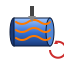

CAM RotarySurface
| This is an experimental feature. It is only available when both Enable Experimental Features and are set, and OpenCamLib is installed. Without OpenCamLib the Operation reports Rotary Surface requires opencamlib (OCL); not available. |

- Menu location
-
- Toolbar
-
New Operations → Rotary Surface
- Workbenches
- Default shortcut
-
None
- Introduced in version
-
26.3
- See also
Description
The CAM RotarySurface command creates a Rotary Surface Operation that machines the outside of a Model mounted on a single rotary axis with continuous 4-axis motion. Its tooltip reads: Continuous 4-axis rotary surfacing on a part mounted on a single rotary.
The Model is tessellated and sampled with an OpenCamLib drop cutter around the rotary axis; the Toolpath then follows the surface while the rotary axis (A, B or C as declared by the Machine) turns continuously. Three patterns are available: Spiral (continuous helical sweep, default), Parallel (axial zig-zag passes stepped angularly) and Rings (full-revolution rings stepped axially).
Step Down and Step Over keep their usual meaning but act in rotary geometry: Step Down is the radial decrement between layers, each layer moving the cutter closer to the rotary axis; the number of layers is the Stock radius minus (lowest surface radius + Radial Stock To Leave) divided by Step Down, rounded up. Step Over is the axial advance per full revolution, the pitch of the spiral (or the distance between rings, or the basis of the angular step for Parallel).
Requirements
-
The Job must reference a Machine that declares at least one rotary axis; the first rotary axis is used and its name (for example A) becomes the rotary word in the G-code.
-
The rotary axis rotation vector must be aligned with world X or Y; a rotary about Z is not supported.
-
The Job Stock must be of type Create Cylinder and its axis must coincide with the rotary axis.
-
The Machine rotary axis limits are checked: a Stop Angle beyond the axis limits produces a warning.
-
The Machine rotary axis Wrap Strategy (unwound, modulo or rezero) decides how the rotary values are written: unwound emits monotonic angles beyond 360°, modulo keeps them in 0-360, rezero keeps them in 0-360 and inserts G92 on every revolution.
Usage
-
Create a Job with a cylindrical Stock aligned with the rotary axis and assign a Machine with a rotary axis.
-
Optionally select faces of the Model to restrict the Toolpath.
-
Press the Rotary Surface button on the New Operations toolbar or choose .
-
On the Tool Controller tab choose the Tool Controller (ball end Tool Bits give the best surface).
-
On the Heights tab set Clearance, Retract and Step down.
-
On the Operation tab set Cut Mode, Cut Pattern, Feed Mode, Start X, Stop X, Start Angle, Stop Angle, Step Over, Angular Resolution, Radial stock to leave, Max Feed and optionally Restrict to Selected Faces.
-
Press OK.
Options
The task panel has the tabs Base Geometry, Heights, Tool Controller and Operation. The Operation tab contains:
-
Cut Mode
-
Cut Pattern
-
Feed Mode
-
Start X, Stop X
-
Start Angle, Stop Angle
-
Step Over
-
Angular Resolution
-
Radial stock to leave
-
Max Feed
-
Restrict to Selected Faces checkbox (the Boundary From Faces property)
Properties
-
Start X: Axial start position along the rotary axis. Defaults to the lower Stock extent.
-
Stop X: Axial stop position along the rotary axis; must exceed Start X. Defaults to the upper Stock extent.
-
Start Angle: Angular start position in degrees, default 0.
-
Stop Angle: Angular stop position in degrees, default 360; values beyond the Machine axis limits produce a warning.
-
Step Over: Axial advance per full revolution of the rotary axis (spiral pitch), a length, default 1 mm.
-
Angular Resolution: Angular spacing between sampled Toolpath points, default 5°.
-
Radial Stock To Leave: How much stock to leave on the walls, default 0.
-
Cut Mode: Climb (default, rotary advances in the positive direction) or Conventional.
-
Cut Pattern: Spiral (default), Parallel, Rings.
-
Feed Mode: Axial Only (default, F equals the Tool Controller horizontal feed on every cut move) or Surface Speed (F scaled per move so the contact point holds the horizontal feed along the surface, capped by Max Feed).
-
Max Feed: Upper cap on the effective feed in mm/min; 0 falls back to the larger of the Tool Controller rapids or 1000.
-
Boundary From Faces: If true and Base Geometry is selected, restrict the Toolpath to the axial and angular extents of the selected faces; faces spanning almost a full revolution or crossing 0/360 are not tightened angularly.
-
Linear Deflection: Tessellation linear deflection, smaller gives a finer mesh. Default 0.1 mm.
-
Angular Deflection: Tessellation angular deflection. Default 0.524.
-
Active, Base, Block Delete, Comment, Coolant Mode, Cycle Time, Tool Controller, User Label, Workplane: as for other Operations.
-
Clearance Height, Safe Height: as for other Operations.
-
Step Down: the radial decrement per layer (see Description).
-
Start Depth, Final Depth: created by the Operation framework but not used by the rotary Toolpath generation, which reads only Step Down, Safe Height and Clearance Height.
Read-only values computed by the Operation.
Limitations
-
Only one rotary axis is used; a rotary about Z is not supported.
-
The Stock must be a cylinder on the rotary axis.
-
Step Over and Angular Resolution must be positive and Stop X must exceed Start X, otherwise the Operation reports an error and produces no Toolpath.
-
Neither built-in simulator shows rotary motion; use CAMotics or another external simulator.
-
The Toolpath display of multi-revolution moves was improved in 26.3.